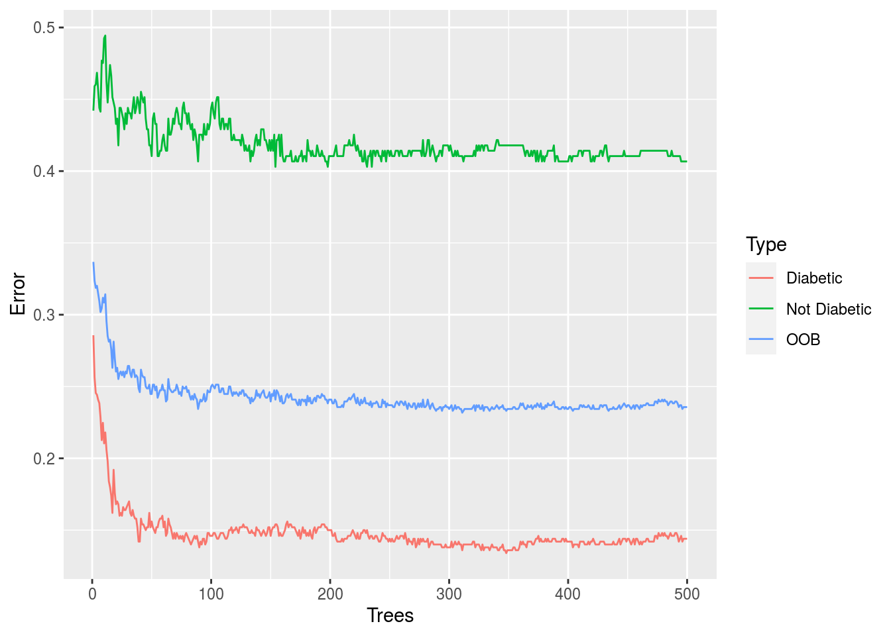
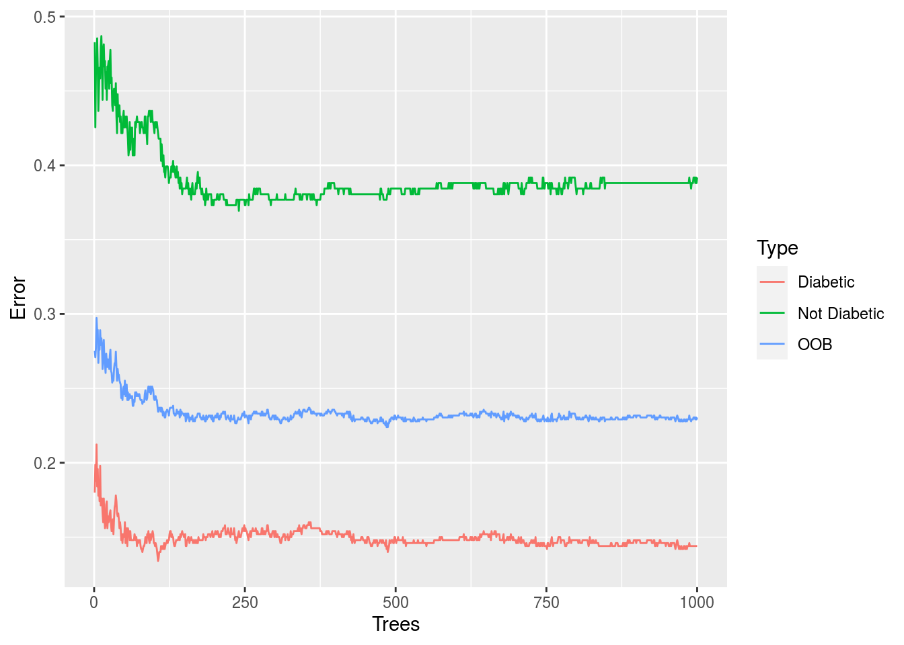
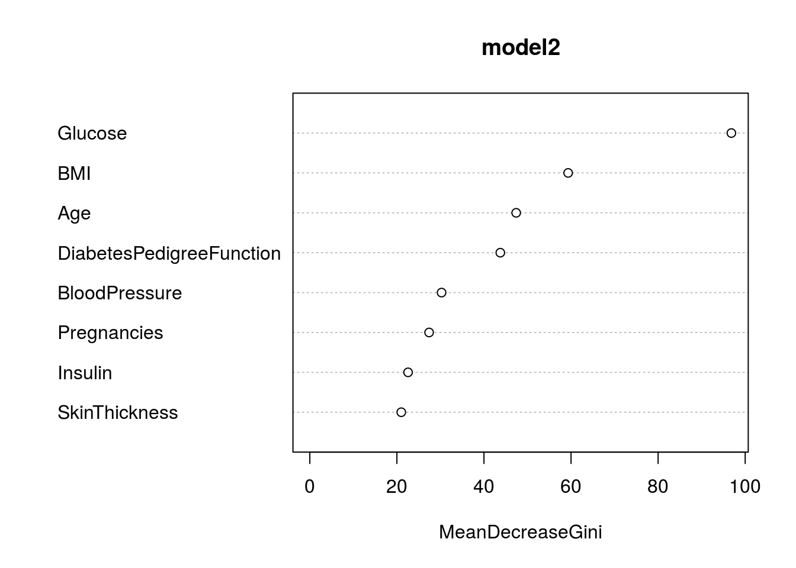

Random forests or random decision forests are an ensemble learning method for classification, regression and other tasks that operate by constructing a multitude of decision trees at training time and outputting the class that is the mode of the classes (classification) or mean prediction (regression) of the individual trees. Random decision forests correct for decision trees’ habit of over fitting to their training set. Random forests generally outperform decision trees, but their accuracy is lower than gradient boosted trees. However, data characteristics can affect their performance.Random forests can be used to rank the importance of variables in a regression or classification problem in a natural way.
Algorithm of Random Forest
Random Forest works on the same principle as Decision Trees; however, it does not select all the data points and variables in each of the trees. It randomly samples data points and variables in each of the tree that it creates and then combines the output at the end. It removes the bias that a decision tree model might introduce in the system. Also, it improves the predictive power significantly.This algorithm can solve both type of problems that is classification and regression and does a decent estimation at both fronts.
Now, let’s take a small case study and try to implement multiple Random Forest models with different hyper parameters. This dataset is originally from the National Institute of Diabetes and Digestive and Kidney Diseases. The objective of the dataset is to diagnostically predict whether or not a patient has diabetes, based on certain diagnostic measurements included in the dataset.
Content: The dataset consists of several medical predictor variables and one target variable, “Outcome”. Predictor variables includes the number of pregnancies the patient has had, their BMI, insulin level, age, and so on.This is a categorical dataset.
Let’s start the R code implementation and predict the “Outcome” based on the explanatory variables.
#install.packages("randomForest")
library(randomForest)## randomForest 4.6-14## Type rfNews() to see new features/changes/bug fixes.library(ggplot2)##
## Attaching package: 'ggplot2'## The following object is masked from 'package:randomForest':
##
## marginlibrary(caret)## Loading required package: latticeLoading the data.
diabetes_data <- read.csv("Diabetes.csv")Printing the summary of the dataset.
str(diabetes_data)## 'data.frame': 768 obs. of 9 variables:
## $ Pregnancies : int 6 1 8 1 0 5 3 10 2 8 ...
## $ Glucose : int 148 85 183 89 137 116 78 115 197 125 ...
## $ BloodPressure : int 72 66 64 66 40 74 50 0 70 96 ...
## $ SkinThickness : int 35 29 0 23 35 0 32 0 45 0 ...
## $ Insulin : int 0 0 0 94 168 0 88 0 543 0 ...
## $ BMI : num 33.6 26.6 23.3 28.1 43.1 25.6 31 35.3 30.5 0 ...
## $ DiabetesPedigreeFunction: num 0.627 0.351 0.672 0.167 2.288 ...
## $ Age : int 50 31 32 21 33 30 26 29 53 54 ...
## $ Outcome : int 1 0 1 0 1 0 1 0 1 1 ...Since the “Outcome” is an integer variable , we are changing the data type of the variable into ordered factor variable.
diabetes_data$Outcome <- ifelse(diabetes_data$Outcome == 1, "Not Diabetic", "Diabetic")
diabetes_data$Outcome <- as.factor(diabetes_data$Outcome)Checking the levels of the outcome.
levels(diabetes_data$Outcome)## [1] "Diabetic" "Not Diabetic"Now, there are continuous integer and numeric variables in the dataset so we are scaling the continuous variables.The scale function in base R, with its default arguments, places continuous variables on unit scale by subtracting the mean of the variable and dividing the result by the variable’s standard deviation (also sometimes called z-scoring or simply scaling). The result is that the values in the transformed variable have the same relationship to one another as in the untransformed variable, but the transformed variable has mean 0 and standard deviation 1.
diabetes_data$Pregnancies <- scale(diabetes_data$Pregnancies)
diabetes_data$Glucose <- scale(diabetes_data$Glucose)
diabetes_data$BloodPressure <- scale(diabetes_data$BloodPressure)
diabetes_data$SkinThickness <- scale(diabetes_data$SkinThickness)
diabetes_data$Insulin <- scale(diabetes_data$Insulin)
diabetes_data$BMI <- scale(diabetes_data$BMI)
diabetes_data$DiabetesPedigreeFunction <- scale(diabetes_data$DiabetesPedigreeFunction)
diabetes_data$Age <- scale(diabetes_data$Age)Let’s check the mean and the standard deviation of one of the predictor say “Age”.
mean(diabetes_data$Age)## [1] 1.98766e-16sd(diabetes_data$Age)## [1] 1Now, we will create a Random Forest model with default parameters and then we will fine tune the model by changing ‘mtry’. We can tune the random forest model by changing the number of trees (ntree) and the number of variables randomly sampled at each stage (mtry). According to Random Forest package description:
Ntree: Number of trees to grow. This should not be set to too small a number, to ensure that every input row gets predicted at least a few times.
Mtry: Number of variables randomly sampled as candidates at each split. Note that the default values are different for classification (sqrt(p) where p is number of variables in x) and regression (p/3)
Building the model.
model <- randomForest(Outcome ~ ., data = diabetes_data)
print(model)##
## Call:
## randomForest(formula = Outcome ~ ., data = diabetes_data)
## Type of random forest: classification
## Number of trees: 500
## No. of variables tried at each split: 2
##
## OOB estimate of error rate: 23.18%
## Confusion matrix:
## Diabetic Not Diabetic class.error
## Diabetic 426 74 0.1480000
## Not Diabetic 104 164 0.3880597By default, number of trees is 500 and number of variables tried at each split is 2 in this case. Error rate is 23.05%.
Boostrap Sampling
Random Forest involves sampling of the input data with replacement called as bootstrap sampling. Here one third of the data is not used for training and can be used to testing. These are called the out of bag samples. Error estimated on these out of bag samples is known as out of bag error. Study of error estimates by Out of bag, gives evidence to show that the out-of-bag estimate is as accurate as using a test set of the same size as the training set. Therefore, using the out-of-bag error estimate removes the need for a set aside test set.
Creating error rate dataframe for all the trees.
Note: Total no of observations is 1500 (500x3=1500) since there 3 types of error, Diabetic, Not Diabetic and oob(out of bag samples), each with 500 observations.
oob.err.data <- data.frame(
Trees = rep(1:nrow(model$err.rate), 3),
Type = rep(c("OOB","Diabetic","Not Diabetic"), each = nrow(model$err.rate)),
Error = c(model$err.rate[,"OOB"], model$err.rate[,"Diabetic"], model$err.rate[,"Not Diabetic"]))Plotting of number of tree vs error .
ggplot(data = oob.err.data, aes(x = Trees, y= Error)) + geom_line(aes(color = Type))
Now, building the model with 1000 trees.
model1 <- randomForest(Outcome ~ ., data = diabetes_data, ntree = 1000)
print(model1)##
## Call:
## randomForest(formula = Outcome ~ ., data = diabetes_data, ntree = 1000)
## Type of random forest: classification
## Number of trees: 1000
## No. of variables tried at each split: 2
##
## OOB estimate of error rate: 22.92%
## Confusion matrix:
## Diabetic Not Diabetic class.error
## Diabetic 429 71 0.142000
## Not Diabetic 105 163 0.391791Creating error rate dataframe for all the trees.
oob.err.data1 <- data.frame(
Trees = rep(1:nrow(model1$err.rate), 3),
Type = rep(c("OOB","Diabetic","Not Diabetic"), each = nrow(model1$err.rate)),
Error = c(model1$err.rate[,"OOB"], model1$err.rate[,"Diabetic"], model1$err.rate[,"Not Diabetic"]))Plotting of the number of tree vs error.
ggplot(data = oob.err.data1, aes(x = Trees, y= Error)) + geom_line(aes(color = Type))
Testing the model accuracy with different values of random feature selection.
oob.values <- vector(length = 10)
for(i in 1:8){
temp.model <- randomForest(Outcome ~ ., data = diabetes_data, mtry = i, ntree = 500)
oob.values[i] <- temp.model$err.rate[nrow(temp.model$err.rate),1]
}Printing the result.
oob.values## [1] 0.2408854 0.2265625 0.2265625 0.2330729 0.2330729 0.2447917 0.2330729
## [8] 0.2421875 0.0000000 0.0000000We can see that for varying the value of mtry from 1 to 8 the oob.values varied respectively . For better prediction of the model , we have to select that mtry value for which the model has the least error.rate.
Since the error rate is low at mtry =3. Building final tree with most optimal customizations i.e., ntree=500, mtry=3 .
model2 <- randomForest(Outcome ~ ., data = diabetes_data, ntree = 500, mtry = 3)
print(model2)##
## Call:
## randomForest(formula = Outcome ~ ., data = diabetes_data, ntree = 500, mtry = 3)
## Type of random forest: classification
## Number of trees: 500
## No. of variables tried at each split: 3
##
## OOB estimate of error rate: 24.09%
## Confusion matrix:
## Diabetic Not Diabetic class.error
## Diabetic 422 78 0.1560000
## Not Diabetic 107 161 0.3992537Variable Importance
One of benefits of Random forest which excites me most is, the power of handle large data set with higher dimensionality. It can handle thousands of input variables and identify most significant variables so it is considered as one of the dimensionality reduction methods. Further, the model outputs Importance of variable, which can be a very handy feature (on some random data set).
Checking the important predictors.
importance(model2)## MeanDecreaseGini
## Pregnancies 27.15986
## Glucose 98.08656
## BloodPressure 30.03082
## SkinThickness 21.26790
## Insulin 23.34112
## BMI 59.43818
## DiabetesPedigreeFunction 42.83979
## Age 47.02026varImpPlot(model2) By the MeanDecreaseGini values we can say which value is of greater importance than the others. The predictors with greater value of MeanDecreaseGini are of greater importance. We can also observe this result by plotting MeanDecreaseGini against the predictors.
Hope I was able to share some helpful concepts with you. See you in the next article. My website link [Pratiksha]https://prat.netlify.app/ .